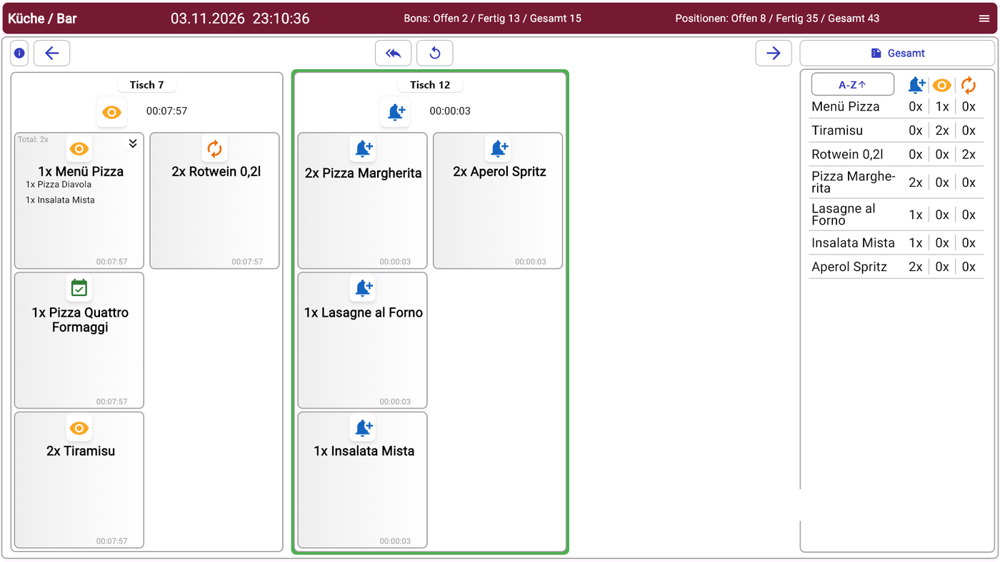
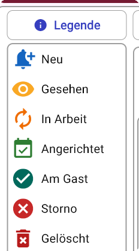

Küchenmonitor im Alltag bedienen
Am Küchenmonitor arbeitet das Küchen- bzw. Barpersonal die Bestellungen ab, die an der ITR Kasse oder in der POS Gastro App gebucht werden. Jede Position wird per Antippen von „Neu“ bis „Am Gast“ weitergeschaltet.
Aufbau der Anzeige

- Kopfzeile: Einstellung des Monitors (z. B. Küche / Bar), Datum und Uhrzeit sowie die Zähler für offene, fertige und alle Bons bzw. Positionen.
- Bon-Spalten: Jede Bestellung erscheint als eigene Spalte mit Tischnummer und der Zeit seit Eingang. Ein neu eingegangener Bon ist grün umrandet.
- Positionskarten: Jede Position ist eine Karte mit Menge und Artikel. Bei Menüs stehen die Bestandteile darunter (z. B. 1x Menü Pizza mit Pizza Diavola und Insalata Mista). Das Symbol oben auf der Karte zeigt den Status.
- Übersicht rechts (Gesamt): Summe je Artikel über alle offenen Bons, getrennt nach Status. Mit A-Z wird die Liste sortiert.
Welche Artikel am Monitor erscheinen, legt der Kimo Ziel Typ am Artikel fest (Küche, Bar oder beides).
Bestellungen abarbeiten
- Bon zur Kenntnis nehmen: Das Glockensymbol einer Karte antippen. Alle Positionen des Bons wechseln auf Gesehen.
- Zubereitung beginnen: Das Symbol der Position erneut antippen. Die Position steht auf In Arbeit.
- Fertig zur Ausgabe: Erneut antippen. Die Position steht auf Angerichtet.
- Ausgegeben: Erneut antippen. Die Position steht auf Am Gast und verschwindet von der Anzeige. Der Zähler Fertig in der Kopfzeile steigt.
Ab Schritt 2 schaltet jedes Antippen nur die einzelne Position weiter. So können Positionen eines Bons unterschiedlich weit sein, etwa das Getränk schon angerichtet, die Pizza noch in Arbeit.
Bedeutung der Symbole
Die Schaltfläche i oben links blendet die Legende ein.

| Status | Symbol | Bedeutung |
|---|---|---|
| Neu | Glocke (blau) | Bestellung ist eingegangen |
| Gesehen | Auge (gelb) | Bestellung ist zur Kenntnis genommen |
| In Arbeit | Kreispfeile (orange) | Position wird zubereitet |
| Angerichtet | Kalender mit Haken (grün) | Position ist fertig zur Ausgabe |
| Am Gast | Person (grün) | Position ist ausgegeben, die Karte wird ausgeblendet |
| Storno | Kreuz (rot) | Position wurde an der Kasse storniert |
| Gelöscht | Papierkorb (rot) | Position wurde entfernt |
Bezahlen oder Schließen des Tisches an der Kasse oder in der App entfernt den Bon nicht vom Küchenmonitor. Der Bearbeitungsstatus wird nur am Monitor geführt.